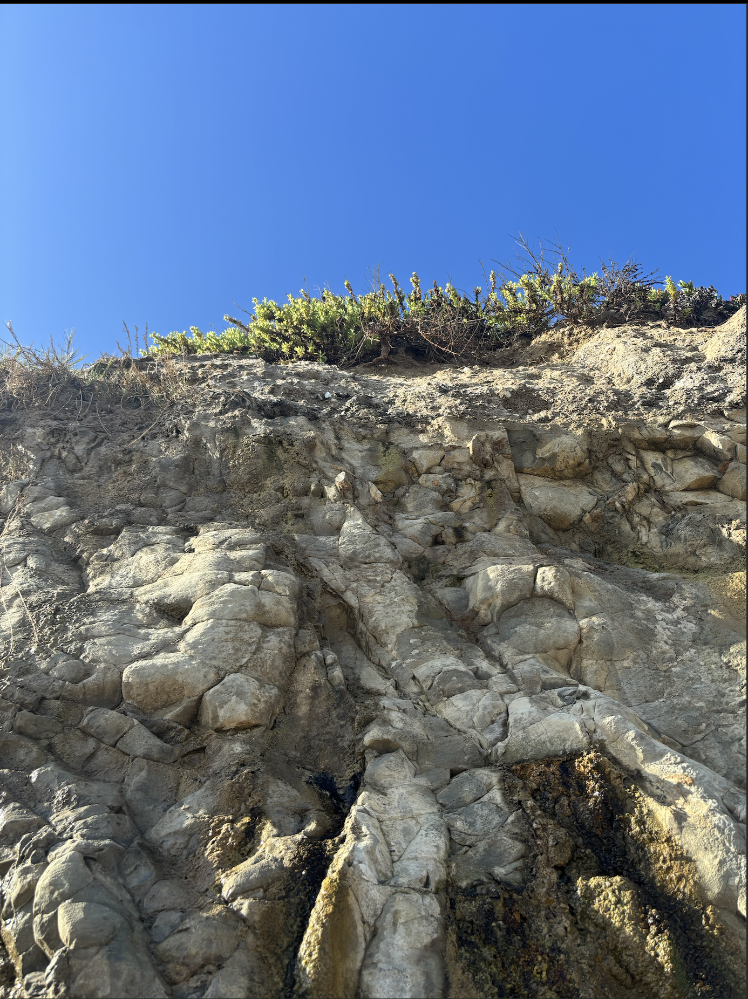
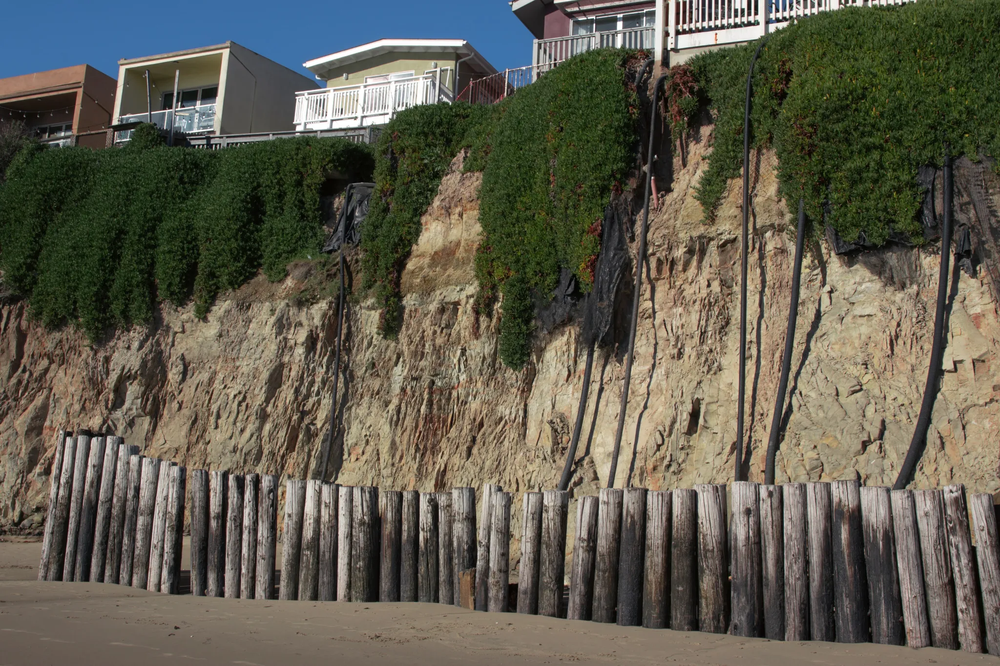
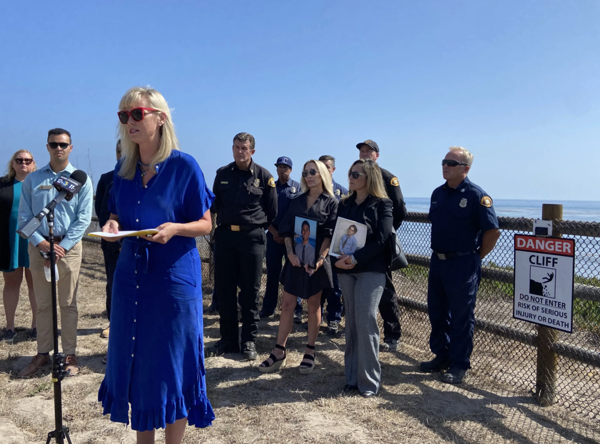
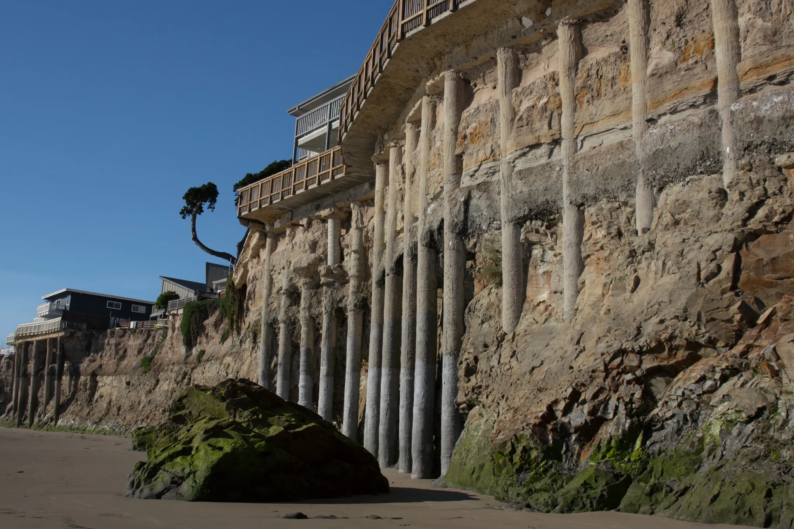
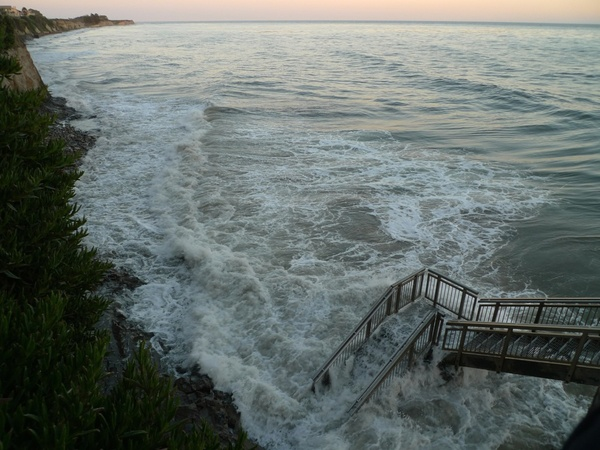

The past, present, and uncertain future of a half-square-mile community on borrowed ground.
Reporting by Liv Nicholls · Elijah Chuc · Peyton Edwards · Xuanbo Zhao
Published 2026
Scroll to begin
Introduction
Tucked along the California coast just west of Santa Barbara is Isla Vista: a half square mile of dense student housing that exists almost entirely because of UC Santa Barbara. Nearly all of its 27,000 residents are college students; it's the place they sleep, study, throw parties, and watch the sun set over the Pacific
The street closest to the water is Del Playa Drive(DP) Half of the homes on its ocean side sit directly on top of coastal bluffs. Their decks and backyards sit right at the edge, with a 30 ft drop down to the beach below. It is one of the most desired addresses in Isla Vista. The ground it sits on is disappearing, and has been for a long time.
A beach access path in Isla Vista — the kind of view that draws students to Del Playa.
Photograph · Isla Vista
Introduction - A Student View
Natalie has lived at 6507 Del Playa since July.
She is a third-year student studying political science and history, and she chose her place for the same reason everyone does: the view.
On a clear morning, you can see the Channel Islands from her deck. The Pacific stretches out beneath a sky that looks almost too blue to be real.
She also knows the cliff under that deck is slowly eroding.
"
The thought of the cliff thinning out each year leaves me more uneasy.
Natalie · Third-year UCSB student
She has not seen a collapse. She has not watched her fence fall or her foundation crack. But she noticed the staircase down the street that had been closed off.
She noticed when her landlord replaced the fence without saying a word. What she is picking up on, even without knowing the geology behind it, is something researchers have been tracking for decades: Del Playa is falling into the ocean. While Isla Vista sees sunny skies most of the year, seasonal shifts that bring heavy rain leave the homes of Del Playa increasingly unstable.
What the Ground Is Made Of
What the Ground Is Made Of
The Cliffs of Isla Vista were analyzed by geologists after a particularly intense El Niño season in 1982, as stated in Isla Vista Community meeting notes found in the UCSB Library Archives. These geologists found that the contents of the cliffs were rather unstable, consisting mostly of marine alluvium (sand and mud) deposits overlying shale. Their analysis also noted that the surface and subsurface soil are not well equipped for proper drainage, leading to seepage and slippage. This contributes to coastal retreat, a complex and unstoppable process of weathering and erosion along coastlines. Paved and controlled watersheds, such as those around the Bradbury Dam, made matters worse by reducing the amount of sediment that reaches beaches. This sand acts as a natural barrier for the cliffs against the ocean. Without this barrier, storms cause serious damage because they do two things at once: raising wave energy offshore while bringing rainfall onshore, saturating the bluff from above and attacking its base from below.
These materials can stand for long periods when dry and supported, but they are highly sensitive to saturation and toe erosion (waves attacking the base of a cliff). Geologists describe cliff failure as a balance between resisting forces, the strength of sediment and dry ground, and driving forces, including gravity, wave undercutting, and water pressure inside the bluff. El Niño pushes hard on all three at once.
County property line surveys from 1965 and 1984 show the bluffs retreat at an average of six inches per year per year,
but the process is episodic, meaning sections can remain stable for years before collapsing all at once.
El Niño years are when that collapse tends to happen.
In 1963, Santa Barbara County passed an emergency setback ordinance that required properties on Del Playa to be positioned back 30 feet from the cliff edge. However, over the years, erosion has caused much of that land to disappear.

Fractured sandstone and shale cliff face viewed from below, c. 2026. Isla Vista bluffs. Source: Author photo.
A History of Erosion
Decades of Prevention Efforts
During the El Niño events mentioned above, a combination of rain, flooding, and wave energy caused significant damage to the cliffs and coastal infrastructure along Del Playa. As houses faced an increasing risk of slipping into the sea, efforts were launched to assess the area and stave off the unstoppable forces of coastal erosion. Homes were moved back or condemned, property owners proposed and even illegally constructed seashore management plans, drainage systems were improved, all to little or no success. Four decades later, things haven't gotten much better.
Scroll the events as the year ticks up on the left.
1978
5–10 ft rock revetment proposal rejected
In a 1978 community newsletter, the Coastal Commission, along with the Isla Vista Planning Commission, Community Council, & Park District, held a hearing in San Luis Obispo regarding the proposed Del Playa seawall. The proposal included a 5-10 foot rock revetment along the base of these bluffs, stretching from 6741 Del Playa to County Park. The seawall would have been about 10-12 feet high & extend approximately 20 feet from the bluff. However, many commission members opposed the proposal because they believed that a “seawall was unnecessary, as bluff top drainage improvements would prevent the major cause of erosion.” They also believed that protecting affordable housing was more important than limiting public access to the ocean. Another concern was that approving the project could lead to cuts in county services such as police, fire, planning, & administration. After the proposal was rejected, people continued searching for other ways to reduce erosion & improve safety. Even so, parts of the Del Playa cliffs continued to collapse over time.
By 1993, the pylons used to stabilize the bluff had become visible from the beach.
1998
Seawall declared non-compliant
In 1998, the California Coastal Commission declared the seawall “non-compliant,” stating that it “caused increased erosion farther down the coast because of the altered bluff conditions.”
2023
Six-foot safety fences required
In 2023, the Santa Barbara County Board of Supervisors approved an eight-point safety plan that required properties along the cliffs to install six-foot fences to help keep people away from the edge.
Residents kayaking down a flooded Del Playa Drive during the 1997–1998 El Niño season. Del Playa Drive, Isla Vista, CA. Source: UCSB Library Archives.Cars submerged on a flooded Isla Vista street during a major winter storm, c. 1982 El Niño season. Isla Vista, CA. Source: UCSB Library Archives.
A man named Dr. Gurrola, an engineering geologist with experience in cliff erosions, inspected several properties along Del Playa & noticed that sea caves were slowly forming beneath parts of the cliffs. Over time, these caves weakened the lands & made the cliffs extremely unstable.
For years, people have fallen from the I.V cliffs, and many have either lost their lives or suffered serious injuries. Over the past 30 years, approximately 14 people have died from falling off the I.V cliffs. Cliff-side properties were required to install six-foot safety fences. The safety plan was created after a 19-year-old SBCC student died after falling from the cliffs. According to a Santa Barbara Independent article in September 2025, SBCC student Benjamin “Benny” Schurmer sadly fell off the cliffs in the 6500 Block of Del Playa Drive. This tragic event sparked the attention of the whole Isla Vista Community, revealing that the houses on Del Playa needed major adjustments. County Supervisor Laura Capps stated, “another terrifying reminder of how dangerous these cliffs can be.” Even after the safety plan was approved, many private property owners ignored the requirement & did not install the fences.
Interviews with a current Del Playa resident show that cliff safety & erosion are still concerns today, even if the effects are not always obvious. Natalie explained that erosion has not caused any damage to their property so far, saying that cliffs “haven't messed with anything on our property.” However, she mentioned that a new fence was installed in the fall, showing that property owners are still taking precautions near the cliffs. Natalie also shared that her landlord & leasing company have replaced the roof & cliff fencing, but are often slow to respond to other maintenance concerns. These responses suggest that while landlords recognize the potential dangers of living near the cliffs, many of their efforts focus on basic safety measures rather than addressing broader concerns related to erosion & property maintenance.
As college students, we find that many current or incoming UCSB students don't fully consider the dangers of living near the cliffs, especially those who may not be aware of past accidents. When students move into houses overlooking the beach, most are more focused on the excitement of living in a “beach house” & experiencing the college lifestyle. Many students also do not take the time to fully read their leases because they see it as too much work or assume nothing will happen. Overall, students in Santa Barbara County need to be more aware of the risks of living near unstable cliffs, especially since erosion & accidents can occur unexpectedly.

The 1992 timber seawall along the Del Playa bluff base, with deterioration visible, c. 2022–2024. Del Playa bluffs. Source: Santa Barbara Independent.

Santa Barbara County Supervisor Laura Capps addresses the media at the cliff edge following a student's fatal fall; families hold photos of the deceased, 2023. Del Playa Drive. Source: Santa Barbara Independent.

Exposed concrete caissons left standing in the cliff face after the building above was cut back, c. 2022–2024. Del Playa bluffs. Source: Santa Barbara Independent
One of the best ways to understand what is actually happening on Del Playa is to look at a single address over time.
Chapter 05 · The Pillar House · 6757 Del Playa
At 6757 Del Playa, the building known informally as the Pillar House — for the concrete caissons(the support posts that help keep the structure stable) visible from the beach below, former UCSB geology professor Art Sylvester photographed the same stretch of cliff from roughly the same spot every few years starting in 2002.
Those photos show a building losing its footing.
Early 2000s
The caissons sat embedded in the cliff face.
The building behind them was intact. The pillars carried the load, but the cliff still held them.
Early 2000s
The caissons sat embedded in the cliff face.
The building behind them was intact. The pillars carried the load, but the cliff still held them.
By 2005
The cliff had already started pulling back.
You could see the pillars holding up the house with no cliff underneath them. Year after year, the pattern repeats. The owner is running out of options.
2007 · The decision
A blue tarp marks where the work is happening.
The owner made a decision: cut the building back, remove the pillars, and accept the loss.
But cutting back one building does not stop the cliff from retreating.
2012 · It reaches the next house
Erosion arrives at the yellow house next door.
By 2012, noticeable erosion had begun beneath the yellow house next door. The cliff has reached it.
Then came the winter of 2017.
Erosion arrives at the yellow house next door.
A storm dropped about five inches of rain in a single weekend in February.Engineers inspecting the property found that the building was less than five feet from the cliff edge. The county red-tagged two ocean-side bedrooms, technically requiring three tenants to leave. But when property manager Chris Mercier held a meeting with all 21 residents at the Pardall Center, every single one of them decided to go.
“I think so long as there's some or any degree of concern for the structural instability of any part of the unit, our safety is still put in jeopardy to some degree,” said Luciano Thomas, a second-year art major who lived there.
Mercier confirmed the building had lost about three feet of cliff in that one storm. It had been sitting eight and a half feet from the edge. After one Friday of rain, it was at five and a half.
For the students trying to find new housing in the middle of the winter quarter, the timing was brutal. Reed Zabel, a second-year political science major, described trying to relocate a ten-person house on short notice in a town with almost no vacancies.
“With the vacancy rate in the area, it's really hard to find anything to accommodate all 10 people or even just find a place that's reasonably close to campus,” he said. “The only options that are open are things that people have passed up, obviously.”
The lawyer from the Isla Vista Tenants Union who was at that meeting put the situation plainly. Because California had been in a drought for years, she explained, students had been able to live without facing dramatic erosion. It was "a roll of the dice," she said.
Nothing collapsed. Nobody was hurt. The cliff just crept close enough in one weekend that twenty-one people had to leave.
Back in Sylvester's archive, the January 2017 photos show the yellow house has now been cut back from the edge too, with a balcony built on the space where the building used to extend. A concrete piling is visible in the cliff face, exposed by years of continued erosion.
Two years later, in April 2019, a 20-foot concrete caisson collapsed onto the beach below the adjacent property at 6761 (the yellow house). The building itself had already been reconfigured years earlier, but the old caissons from the original foundation were still standing, detached and freestanding after the patio above them was removed.
Nobody was hurt, but the beam had to be broken into pieces and hauled off the beach in a wheelbarrow.
The work of managing erosion does not end when a building gets cut back. The infrastructure left behind keeps breaking down and falling. One building's solution becomes the next building's hazard.
The pattern at the Pillar House played out elsewhere on the street as well...
January 22, 2017 · The Oasis · 6653 Del Playa
A section of bluff collapsed into the ocean on a Sunday afternoon.
On a Sunday afternoon during a heavy storm(On January 22, 2017), a section of bluff at 6653 Del Playa collapsed into the ocean. Part of the building's communal backyard went with it. Nobody was hurt, but four of the nine units at the property, known as The Oasis, had to be evacuated — leaving twenty-eight students displaced.
Residents said it sounded like a massive earthquake.
Damage of
storm-driven cliff collapse, February 2024. 6745 Del Playa Drive. Source: Noozhawk
What made this event more than just a scary moment was what it revealed about the county's monitoring system. Officials had flagged the eastern side of the building because the bluff was within ten feet of the foundation. But the collapse happened on the western side, where the bluff was considered safe.
At least 30 buildings on Del Playa have been cut back over recent decades. Each cutback reduces a building's footprint, which means fewer units and less housing in a town that is already severely short on housing.
The building had been thought to be eighteen to nineteen feet from the cliff edge. Four surrounding buildings were evacuated after this collapse.
A local official called it a wake-up call and said there needs to be a reevaluation of cliff policies given how much climate change has shifted things.
After the 2024 collapse, reporters found that about five properties within ten feet of the cliff had not been required to vacate, because of exceptions granted for deepened foundations. The county also could not provide geotechnical reports for roughly a dozen inhabited properties within twenty feet of the edge. The structural safety of those buildings, relative to what is happening to the ground beneath them, is not documented.
6745 DP Overtime (1987-2014)
1987
Historical view of four Del Playa bluff-top structures (A–D) with pilings visible at the cliff base, c. 1987. Source: Art Sylvester/UCSB Geology.
2002
All the concrete pilings are exposed in the upper, sandy part of the cliff beneath each house, and several pilings are exposed in the lower, rocky part of the cliff. 2002. Source: Art Sylvester/UCSB Geology.
2007
Four Del Playa structures (A–D), timber seawall below, 2007. Del Playa Drive. Source: Art Sylvester/UCSB Geology.
2014
Four Del Playa structures (A–D) in a post-storm survey showing continued bluff retreat, February 2014. Source: Art Sylvester/UCSB Geology.
Chapter 08 · Present Risk
What Comes Next
UCSB geology professor Art Sylvester spent more than 40 years measuring the bluffs. At Campus Beach, just east of DP, he recorded an average retreat of five inches per year. At that rate, the bluff edge is about 35 years away from reaching Lagoon Road, one of the main roads through campus. Currently, the path next to Lagoon Road is fenced off due to the rapid cliff erosion.
His advice to property owners is blunt. Cut the building back or move it closer to the street. Either way, you are just buying time.
The situation is driven by three things happening at once: erosion that has been accelerating since Bradbury Dam cut off the sand supply, El Niño cycles that turn gradual retreat into sudden collapse, and sea-level rise that is pushing more wave energy against cliffs that are already weakened. Scientists expect those pressures to get worse.

High tide in Isla Vista, 2011. Source: Britta GustafsonDP is not going anywhere in the next few years. Students will still live there, still have parties there, still watch the sunset from those decks. But the question of how long that lasts, and what happens to Isla Vista's already strained housing supply when those buildings start getting red-tagged, is one that nobody has a clean answer to yet.
"
“Our Lives Aren't Exactly Considered”
Natalie
Natalie's building is not the closest one to the edge. Her unit faces the parking lot. There is a fence. She says the distance feels okay.
But she also describes landlords who redo fences and roofs without telling anyone, power outages with no warning or explanation, and maintenance requests that go nowhere. When she and her neighbors raise concerns, she says, nothing really changes.
"
“I feel like our lives aren't exactly considered based on how little they tell us about certain things,”
Natalie says
That is not just a frustration with one landlord. It is a description of how Isla Vista has worked for decades. Students cycle through every year. Landlords manage dozens of buildings and respond when the county requires them to. The county monitors the bluffs annually and after big storms, but both of the major recent collapses happened in spots that had been considered lower risk.
What Natalie actually wants to know is pretty simple. She wants to understand what is happening under her feet.
"
I would definitely ask what the cliffs are projected to look like in the next ten years. At what rate are they eroding? How much is shaved off each year?
Natalie
The cliffs are still there for now.
"I love living on DP because of how beautiful it is to be by the water. But it is also pretty scary, considering how the cliffs could disappear anytime in the future."
— Natalie
She pauses.
"There are definitely ups and downs."
As a college student, you don't really consider the dangers of living near the cliffs, especially as an incoming student who may not be aware of past accidents. When students move into houses overlooking the beach, most are more focused on the excitement of living in a "beach house" & experiencing the college lifestyle. Many students also do not take the time to fully read their leases because they see it as too much work or assume nothing will happen. Overall, students in Santa Barbara County need to be more aware of the risks of living near unstable cliffs, especially since erosion & accidents can occur unexpectedly.
Reporting
Liv
Elijah
Peyton
Xuanbo
Photography
Art Sylvester archive
AGS 2007 / 2012
Contributed